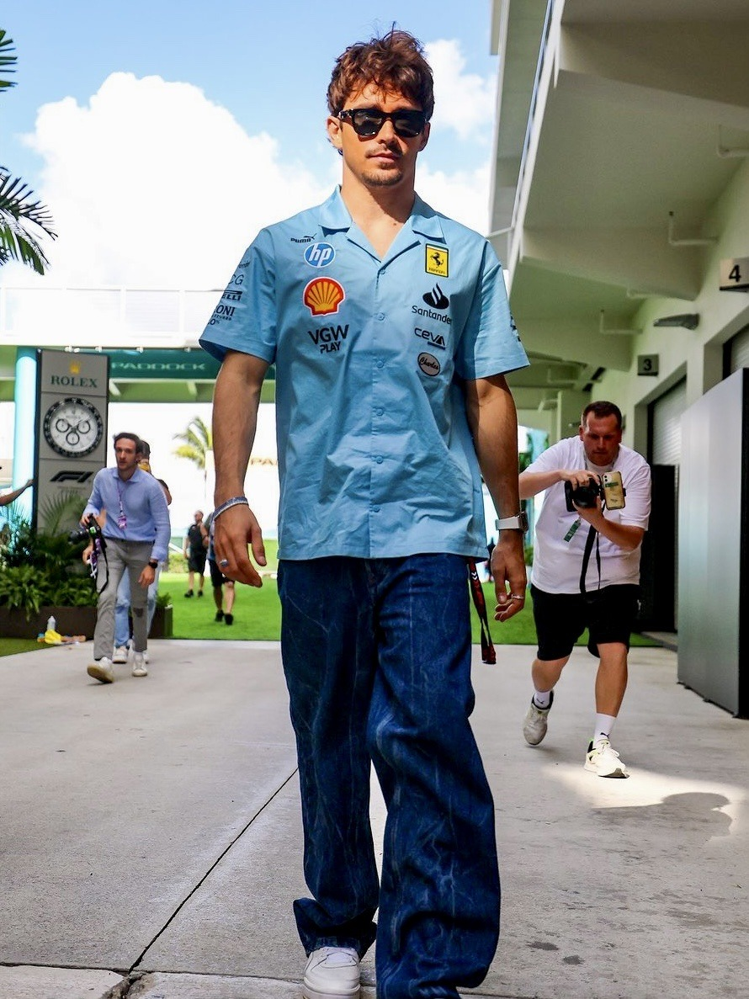
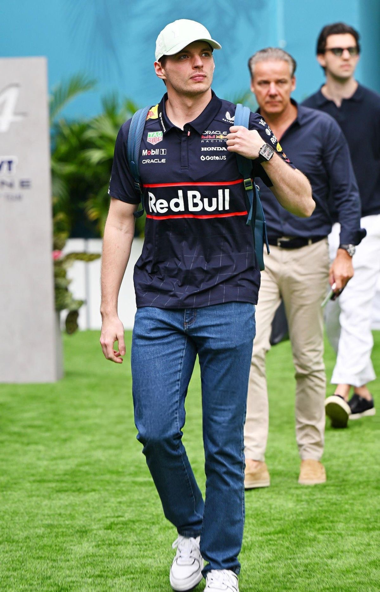
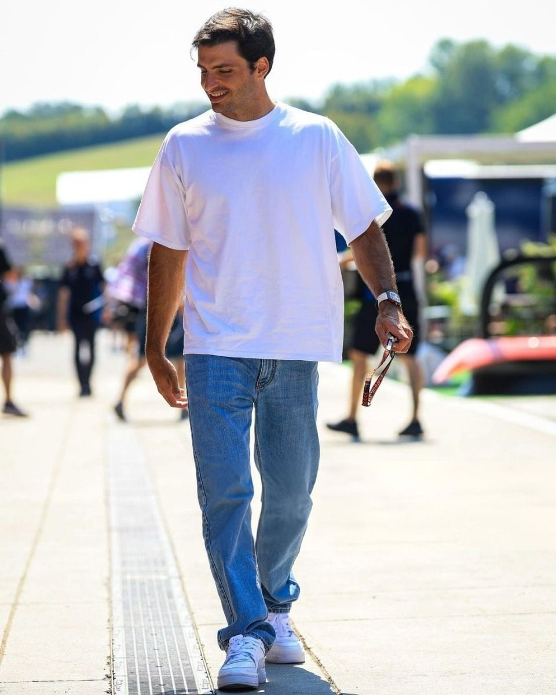

Ferrari
Charles Leclerc
Understated chic and quiet luxury
Leclerc's image is built on restraint: neutral palettes, elegant cuts, and a polished sense of control that mirrors Ferrari's premium heritage.
Raceweek Fashion Editorial
Where motorsport meets luxury fashion, visual identity, and cultural storytelling
Explore the editorialFormula 1 Paddock Couture explores the intersection of speed and style. In contemporary Formula 1, the paddock is no longer only a place of competition: it also functions as a visual stage where branding, personal identity, and fashion performance work together.
Drivers have become more than athletes. They are now ambassadors, cultural figures, and style references whose clothing choices communicate confidence, values, and status. Through images, typography, layout, and interactive design, this project presents Formula 1 as an editorial universe.
Paddock icons

Ferrari
Understated chic and quiet luxury
Leclerc's image is built on restraint: neutral palettes, elegant cuts, and a polished sense of control that mirrors Ferrari's premium heritage.

Mercedes
Haute street couture and fearless experimentation
Hamilton turns arrival moments into runway moments, combining luxury fashion, streetwear, bold silhouettes, and personal activism.

Red Bull Racing
Performance minimalism and functional cool
Verstappen projects efficiency rather than spectacle. His style language is rooted in clean lines, technical simplicity, and performance-first confidence.

Williams
Refined tailoring and classic masculinity
Sainz often communicates elegance through fitted shapes, timeless menswear references, and a visual identity based on balance and refinement.
Faces of the grid
Paddock portraits

Charles Leclerc embodies a quiet luxury aesthetic within Formula 1. His style rarely depends on excess. Instead, it communicates quality through subtle tailoring, clean fits, and calm color palettes.
In editorial terms, Leclerc is about balance: softness without weakness, elegance without theatricality, and luxury without obvious display.
Style keywords: refined, tailored, discreet, classic

Lewis Hamilton treats fashion as self-expression and cultural language. His paddock appearances often combine avant-garde silhouettes, designer pieces, and strong accessories that frame him as both athlete and fashion figure.
He brings visibility, experimentation, and narrative power to the paddock, making style part of the event.
Style keywords: bold, expressive, experimental, high-fashion

Max Verstappen's style is closer to performance design than to fashion spectacle. He communicates through practical, streamlined, low-noise aesthetics that reflect his competitive persona.
This makes his visual identity highly contemporary: minimal, functional, and rooted in confidence rather than ornament.
Style keywords: minimal, technical, clean, performance-driven

Carlos Sainz often projects a more traditional masculine elegance. His clothing choices suggest discipline, structure, and Mediterranean sophistication, linking classic menswear codes with modern sports celebrity culture.
In the editorial logic of this site, Sainz represents continuity, polish, and understated confidence.
Style keywords: elegant, structured, polished, timeless
Signature codes
Quiet luxury and elegant restraint
Experimental silhouettes and fearless styling
Functional, clean, performance-first image
Sharp tailoring and classic menswear energy
Garage aesthetics
Heritage red, Italian prestige, emotional luxury, and visual drama
Monochrome polish, futuristic minimalism, and premium modernism
Dynamic contrast, youth culture, athletic energy, and performance branding
Bright identity, modern optimism, engineered cool, and digital-friendly visuals
What the paddock is wearing
Structured coats, leather jackets, and statement layers reshape the paddock silhouette.
Technical fabrics and clean cuts connect race culture with modern urban fashion.
Fashion labels and motorsport brands increasingly share audiences, values, and visual codes.
Inside the paddock narrative
Formula 1 now operates across sport, media, luxury branding, and digital culture. This project approaches the paddock as a communication environment where clothes, posture, team colors, and image-making strategies all contribute to meaning.
The site therefore combines editorial writing, responsive layout, interactive cards, a carousel, and typographic hierarchy to transform course concepts into one coherent visual experience.
“The paddock is the new runway — and the driver is both athlete and icon.”
Project focus
This website was developed as a web design project focused on typography, visual hierarchy, layout, interactivity, and responsive editorial storytelling. It reflects how digital design can present Formula 1 not only as a sport, but also as a platform for fashion communication and luxury branding.